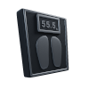
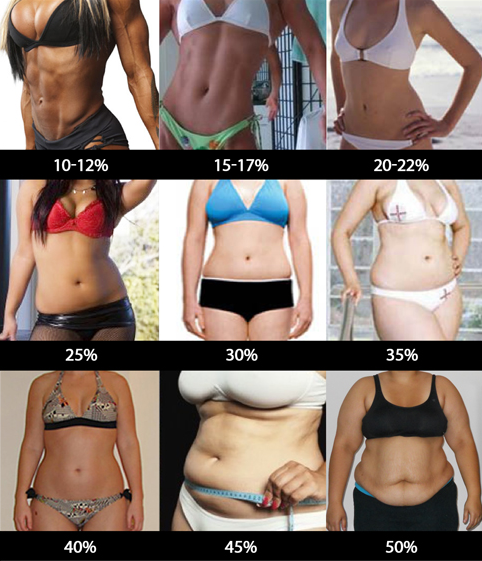
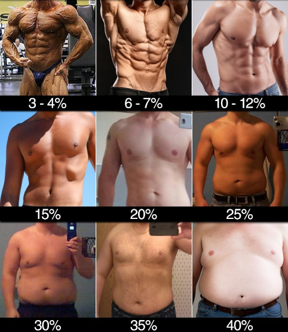

This calculator requires you to provide your body fat percentage, which enhances its accuracy.
Since most people aren't aware of their body fat percentage, useful photos, for both men and women, have been provided.
This calculator allows you to provide the number of calories that you burn throughout a day, if you happen to track that.
This information will be used instead of activity level, which enhances the calculator's accuracy.
In the case of losing fat, you may choose between faster fat loss in exchange for lower caloric intake and vice versa.
If sliding for an appropriate value annoys you, you may input the value into this small box below each slider.

Weight (in kg)
Body fat (show helpful charts)
Body fat percentage for women:

Body fat percentage for men:

Activity level (show examples)
Activity levels:
Little or no exercise:
- No intentional exercise,
- Intetional low-intensity exercise, such as stretching, yoga, slow walking, walking a dog, performed under 30 minutes a day,
- Activities of daily living, such as cleaning, shopping, gardering, taking out the trash, TV watching, using a computer,
- Most of the day spent sitting.
Light activity:
- Low-intensity intentional exercise, such as fast walking, bowling, playing pool, performed for at least 30 minutes a day,
- Some more intense exercise, such as jogging, slow cycling, performed for a shorter period of time (e.g. 15-20 minutes).
Moderate activity:
- Intentional more intense exercise, such as weight training, running, swimming, boxing, playing basketball etc., performed for 4-6 hours a week,
- Having a job that requires a low-intensity activity, such as a waitress or a mailman.
Moderate activity:
- Intentional more intense exercise, such as weight training, running, swimming, boxing, playing basketball etc., performed for 7-9 hours a week.
Moderate activity:
- Daily intense exercise, performed for over an hour a day,
- Having a job that requires a more intense activity, such as a construction worker or a bike delivery man.
Daily caloric expenditure
Please, provide all necessary data (units, goal, gender, age, weight, height, body fat, and activity level or daily caloric expenditure).
Your recommended daily caloric intake is: